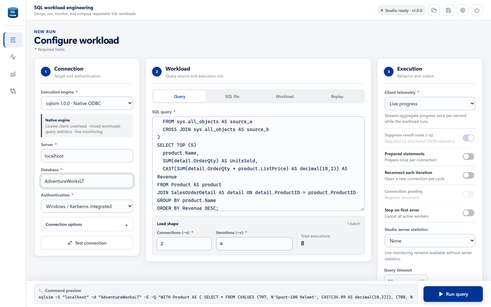

sqlsim Studio
Configure, monitor, replay, and compare workloads in a self-contained local browser app.
Explore Studio →Configure queries, run concurrent users, and watch performance live with sqlsim Studio. Go from a single query to a repeatable load test in a local browser app.
v1.0.0 · Windows x64 · Includes Studio and both CLIs.
Requires ODBC Driver 18 and access to a SQL database. No .NET install needed. Installation guide
Prefer the command line? Explore sqlsim and sqlpysim, including Linux options.

Start visually, automate from the command line, compare drivers, or describe the experiment in plain language.
Configure, monitor, replay, and compare workloads in a self-contained local browser app.
Explore Studio →Native C++ and ODBC for low-overhead scripts, concurrent load tests, and replay.
Read the CLI guide →A Python workflow powered by Microsoft's mssql-python driver for automation and comparison.
See Python examples →Use GitHub Copilot and other agents to design and compare experiments from plain-language requests.
Use with agents →Use the same workload patterns across local development, Azure, and Microsoft Fabric.
Start with Studio on Windows. No hosted service, no .NET install, and no telemetry sent elsewhere. Use a development or test database you have permission to load test.
sqlsimstudio\sqlsimstudio.exe. In your browser, choose your SQL server, database, and authentication method.